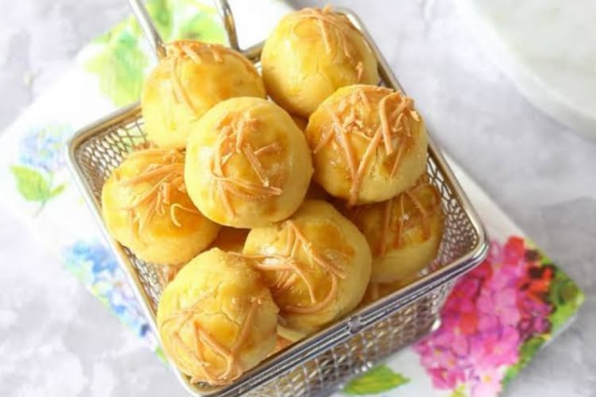
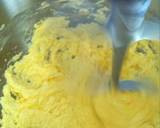
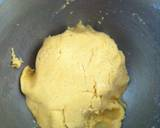
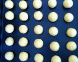
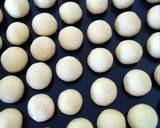
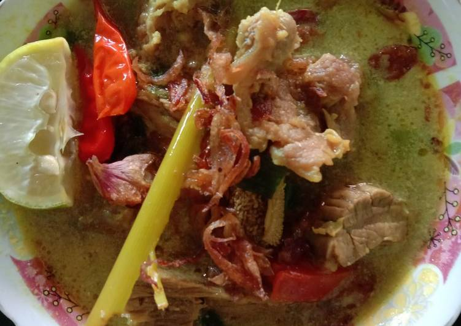
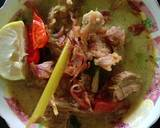
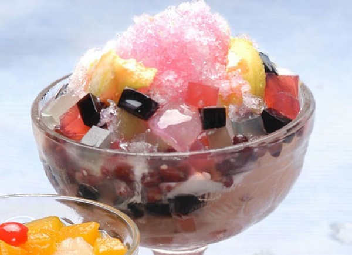

RESEP MASAKAN NICHOLAS SAPUTRA
RESEP MASAKAN SEDERHANA
RESEP KUE NASTAR

BAHAN-BAHAN
- 125 gram butter
- 12 gram margarin
- 50 gram gula halus
- 2 butirkuning telur
- 350 gram tepung terigu
- 2 sdm susu bubuk full cream
BAHAN OLESAN
- 3 kuning telur
- 3 sdm minyak goreng
- 3 sdt susu kental manis
LANGKAH-LANGKAH
- kocok sebentar margarin, butter (butter ini sama dengan mentega) gula dan telur,cukup sampai tercampur saja.(mixer kurang lebih 30detik-1menit) jangan lama2 nanti hasilnya akan melebar saat di ove.

- Masukan tepung terigu dan susu bubu, aduk dengan perlahan.

- Ambil sedikit adonan (pakai sendok takar 1sdt) bentuk bulat, isi dengan selai nanas, taruh di loyang, beri jarak antara yang satu dengan yang lain.

- Oven dengan suhu 140°c. selama lebih kurang 30menit.

- Aduk rata bahan olesan

- Poles dengan bahan polesan.ini olesan pertama, oles sampai semua selesai.
- lanjut olesan yang kedua.
- dan lanjut oles yang ketiga.
- oven lagi dengan suhu 100°c kurang lebih 10 menit, dan angkat dar biarkan dingin, baru disimpan.
- mulus kinclong.
SOTO DAGING KUAH SANTAN

BAHAN-BAHAN
- 800 gr daging sapi
- 2 batang serai, memarkan
- Lengkuas secukup nya, memarkan
- 1 buah tomat besar
- 3 batang daun bawang pre, potong - potong
- 2 lembar daun jeruk
- 250 ml santan kental
- 1 sdt penyedap rasa
- 1 sdt garam
- 1 sdt gula pasir
REMPAH YANG DIHALUSKAN
- 10 biji bawang merah
- 5 siung bawang putih
- 1/2 sdt merica
- 3 butir kemiri
- 1 ruas kunyit
- 2 ruas jahe uk sedang
TOPING PELENGKAP (optional)
- Krupuk
- Kecap manis
- Sambal
- Jeruk nipis, belah
LANGKAH-LANGKAH
- Cuci daging sampe bersih, didihkan air secukupnya, disini saya rebus pakai metode 5-30-7 ya, jadi rebus daging pada air mendidih selama 5 menit, matikan api dan diamkan daging tetap dalam panci tertutup selama 30 menit, setelah 30 menit nyalakan api rebus kembali selama 7 menit, angkat dan daging siap di potong sesuai selera.
- Disini saya pake air bekas rebusan daging sbg kaldu ya, jadi masukkan semua rempah yang sudah di haluskan ke dalam panci air rebusan daging tadi, masukkan lengkuas, serai dan daging yang sudah di potong2, tunggu sampe setengah mendidih.
- Masukkan santan, aduk rata... Disusul dg masukkan bawang pre, tomat, daun jeruk penyedap rasa, garam, dan gula pasir.
- Aduk2, tunggu sampe mendidih tes rasa...
- Siap disajikan dg perasan jeruk nipis, kecap manis, sambal (optional), bawang goreng Dan krupuk diatasnya....

RESEP ES CAMPUR PELANGI

BAHAN-BAHAN
- Buah semangka merah segar yang sudah dipotong kotak atau dibentuk bulat kecil kurang lebih sebanyak 1/4 kg.
- Buah melon segar yang sudah dipotong kotak kecil juga sesuai selera atau kurang lebih sebanyak 1/4 kg juga.
- Jagung manis yang sudah dipipil siap saji atau sudah direbus secukupnya atau kurang lebih sebanyak 200 gram.
- Santan kental yang dibuat dari parutan 1.5 buah kelapa sampai menghasilkan kurang lebih 1 liter santan.
- Daun pandan yang sudah dicuci bersih kurang lebih sebanyak 3 pcs.
- Garam dapur beryodium secukupnya sesuai selera atau kurang lebih sebanyak 1 sendok kecil saja.
- Agar-agar warna sesuai selera secukupnya atau kurang lebih sebanyak 100 gram sampai 200 gram.
- Sirup manis merek favorit kamu, secukupnya sesuai selera atau kurang lebih sebanyak 10 sampai 1 sendok makan.
- Kental manis dan es batu serut secukupnya sesuai selera.
LANGKAH-LANGKAH
- Pertama kamu siapkan panci kemudian masukkan santan dan beri daun pandan yang sudah disimpul dan garam lalu aduk aduk sampai mendidih dan angkat.
- Siapkan mangkuk atau gelas kemudian masukkan aneka potongan buah segarnya dengan rapi.
- Masukkan santannya secukupnya sesuai selera masing masing.
- Beri beberapa es cube atau es serut sesuai selera.
- Terakhir beri siraman sirup dan kental manis sesuai selera dan siap untuk disajikan.
- Es campur bisa dinikmati.
Sumber Referensi